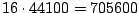
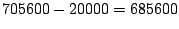
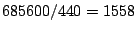
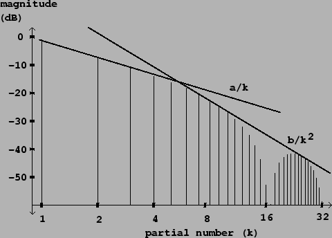

As a first line of defense against foldover, we can synthesize the waveform at a much higher sample rate, apply a low-pass filter whose cutoff frequency is set to the Nyquist frequency (for the original sample rate), then down-sample. For example, in the above scenario (44100 sample rate, 440 Hertz tone) we could generate the sawtooth at a sample rate of  Hertz. We need only worry about frequencies in excess of  Hertz (so that they fold over into audible frequencies; foldover to ultrasonic frequencies normally won't concern us) so the first problematic partial is , whose amplitude is -64dB relative to that of the fundamental.
|  |
This attenuation degrades by 6 dB for every octave the fundamental is raised, so that a 10 kHz. sawtooth only enjoys a 37 dB drop from the fundamental to the loudest foldover partial. On the other hand, raising the sample rate by an additional factor of two reduces foldover by the same amount. If we really wish to get 60 decibels of foldover rejection--all the way up to a 10 kHz. fundamental--we will have to over-sample by a factor of 256, to a sample rate of about 11 million Hertz.